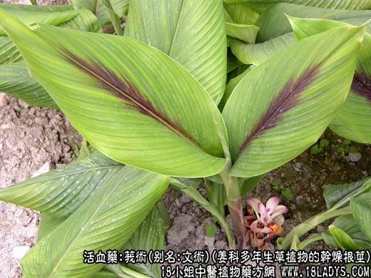
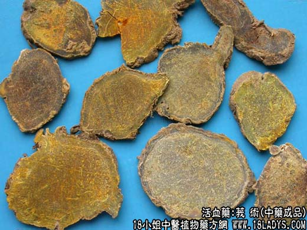
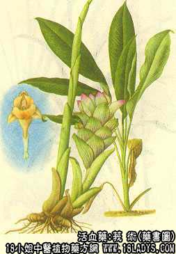

莪术为常用中药。始载《开宝本草》，原名“蓬莪术”。现商品有莪术、温莪术两种。
别名：文术。
来源：为姜科多年生草植物莪术、毛莪术（莪术）、郁金（温莪术）的干燥根茎。栽培或野生。
产地：莪术主产于广西、云南及四川等地。温莪术主产于浙江。
性状鉴别：莪术：呈类圆球形，纺锤形，直径1.2~3厘米，最大可达5厘米，长2.5~5厘米。外表皮灰黄色，显光洁，有细环节纹和须根残痕及凹入芽眼。质坚重，不易碎裂。断面黄褐色或绿褐色，角质样，有光泽，有不显著毛丝状极细维管束，近皮层处有一黄白色环圈。气微带姜香，味微苦辛。
温莪术：主根呈圆锥形、纺垂形，新生侧根有时呈姜块状，直径1.5~3.5厘米，长3~8厘米。外表皮灰黄色，较粗糙，有明显的环节纹，节上多带有未去尽的残存鳞叶和须根。质坚重，不易碎裂。断面黄褐色或绿褐色，角质样，有光泽或无光泽，丝状维管束较多而明显近皮层处亦有黄白色环圈。姜香气稍重，味辛苦。
习惯认为广西产莪术，个小均匀，表皮光洁，内碴绿褐色，光亮，品质较好。温莪术较差。
主要成分：含挥发油，酚性成分，有机酸等。
药理作用：行血破瘀、攻逐积滞。经初卡实验，其中一部分作用为：
1、促吸收：实验证明，其煎剂对家兔腹膜腔内的自体血液和血块，有较好的促吸收作用。前人所谓“破瘀”，其原理可能就在于此。
2、抗肿瘤：其注射液对小鼠肉瘤有抑制作用。临床观察对一些癌瘤有一定治疗作用。
3、健胃：其挥发油有芳香健胃作用。
炮制：切片，醋制。
性味：苦、辛，温。
归经：入肝、脾经。
功能：行气破血，消积止痛。
主治：症瘕积聚，气血凝滞，脘腹胀痛，经闭腹痛等症。
临床应用：破血行气，治积聚症瘕的常用药。
1、用于治月经不调。对合并有小腹包块、由气滞血瘀所致的经闭、经痛较适用，患者月经稀少或数月不行，并有小腹作痛、精神郁闷、脉弦，小腹有包块(相当于附件炎等)，可用莪术配四物汤，方如莪术散。
2、用于治气滞血瘀所致的症瘕积聚、心腹痛、胁下胀痛。例如肝硬变时如有肝硬肿大、质地较硬、胁下隐隐作痛，甚至出现腹水（但全身一般情况尚好），可用莪术、三棱。配其他逐瘀、软坚、益气药，方如莪棱逐瘀汤。兼有郁热者。配栀子、生地、旱莲草。
3、用于治饮食积滞（消化不良），取其有健胃作用。凡有气胀、肠鸣、胃部满实作痛，可用莪术开胃消食止痛，常配木香、川朴或配谷芽、麦芽、青皮、陈皮、槟榔等，平素胃弱者须加配党参、黄芪、白术。
4、用于治疗癌肿。据最近报道，用莪术注射液治疗子宫颈癌，每日在病灶局部注入药液10~30毫升，疗程3个月左右，疗效较好（但晚期病例无效）。又可配合口服水煎剂，处方：莪术（醋制）9g，三棱（醋制）9g，水三碗煎成一碗，早饭前和晚饭后各服半碗。也可以用莪术挥发油软膏外用局部敷治。
上述疗法对处阴癌和皮肤癌也有一定疗效。
使用注意：1、莪术药性虽不甚峻烈，但仍属破削之品，配合三棱治症瘕积聚时，常须与等量人参或党参，北芪同用，使在破瘀之中，不致损伤元气；
2、孕妇和月经过多者，不宜用莪术。
用量：3~9g。
处方举例：1、莪术散（《证治准绳》）：莪术9g、川芎3g、当归12g、熟地18g、白芍9g、小茴香3g、白芷3g、甘草2.4g，水煎服。
2、莪棱逐瘀汤：莪术9g、三棱9g、红花9g、丹参15g、鳖甲18g（先煎）、炮山甲15g、党参9g、黄芪9g、当归9g、陈皮9g，水煎服。
注：浙江地区将郁金的根茎蒸熟或煮熟晒干，称温莪术。生鲜切片晒干称片姜黄，详见姜黄项下。